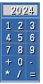

Material didático para Introdução à Programação
[ Memória | Variáveis | Expressões | Contexto ]
Nesta seção apresentaremos o conceito de variáveis e de expressões aritméticas.
Ideia de variávelIlustraremos a ideia e necessidade de variáveis a partir de um exemplo simples: como realizar o cálculo de gastos usando uma calculadora muito elementar.
 Imagine uma calculadora simples, como ilustrado ao lado, dispondo de apenas um mostrador e as 4 operações básicas (soma, subtração, multiplicação e divisão).
Caso você deseje computar os seus gastos, deve digitar sequencialmente os valores gastos, um a um, intercalados com o operador soma +, sendo que ao final você deve teclar = para visualizar o resultado das somas. Vamos supor que os valores dos gastos foram 5, 2, 3, 5 e 3, ao final teriamos o valor 18.
Mas como foi possível obter a soma de todos os valores? Isso só foi possível por existir um "acumulador" (AC) para armazenar o primeiro valor digitado e depois disso, esse mesmo "acumulador" teve um novo valor a ele adicionado (ou acumulado): AC := 5, depois AC := 5+2 = 7. depois AC := 7+3 = 10. depois AC := 10+5 = 15 e por último AC := 15+3 = 18.
Usaremos o exemplo acima (da calculadora) para apresentar a ideia de variáveis.
A calculadora pode ser entendida como um dos componentes de um computador, um componente que realiza os cálculos.
O recurso da calculadora que armazena os valores computados (que denotamos por AC) seria o
equivalente a uma posição de memória em um computador (um pedaço da memória que pode armazenar valores).
Para se ter uma noção da diferença, deve-se notar que um computador moderno dispõe de vários registradores e um memória muitas
ordens de grandeza maiores, hoje compra-se computadores com ao menos 2 Gb de memória RAM
(Gb = giga bytes = 1 bilhão de bytes)Curiosidade
Deve-se destacar que o valor armazenado na registrador ou memória pode ser alterado, podendo-se dizer
que os valores na memória variam, dai o nome de variável adotado para representar esses
locais em linguagens de programação.
Usualmente, pode-se usar qualquer combinação de letras e números (iniciando por uma letra) para compor o
nome de uma variável.
Exemplo de uma instrução alterando o valor da variável de nome x em uma linguagem de programação
qualquer:
x recebe o resultado da expressão "o quadrado do valor armazenado em b menos 4 vezes o conteúdo em a vezes o conteúdo em c".
Sendo assim podemos dizer que uma variável:
- É um espaço de memória utilizado para guardar e manipular uma informação;
- Pode ter seu valor alterado;
- Em geral deve ter seu nome inicializada por uma letra seguido de qualquer número de caracteres, excetuando-se caracteres especiais;
- Deve ter um nome descritivo, de forma que o leitor possa entender facilmente para que ela serve.
Assim, toda linguagem de programação possibilita a manipulação de variáveis. Por exemplo na linguagem C pode-se declarar uma variável do tipo inteiro com o comando int AC = 5; (no exemplo, além de declarar uma variável de nome AC, também a iniciamos com o valor 5).
Portanto, variável é essencial para que possamos fazer com que o programa receba algum dado de nosso interesse. Mesmo em um editor de texto isso ocorre, o texto que digitamos é armazenado (de alguma forma, em variáveis!).
Para conhecer mais
Para conhecer um pouco mais sobre como é possível implementar esse conceito em computadores digitais, estude o restante desse texto.
Memória, bits e bytesUm elemento essencial à computação é o conceito de variável, que significa de um ponto de vista mais próximo da linguagem da máquina (baixo nivel), a possibilidade de armazenar e recuperar diferentes valores em determinada posição de memória.
Em última análise, os dados presentes na memória do computador é uma sequência de bits e um bit corresponde a uma posição de memória que pode armazenar o valor 0 ou o valor 1. No início da computação moderna a menor quantidade de bits que podia acessar eram 8, que foi denominado por byte.
Desse modo, toda informação armazenada no computador é uma sequência de bytes e o tratamento de cada que se dá para cada uma dessas sequências pode variar, por exmeplo, pode considerar a sequência 0010 com uma letra ou como um inteiro. Ou seja, de acordo com o contexto, se ela estiver associada a uma variável do tipo inteiro pode-se interpretar a sequência como um número inteiro, se for uma variável do tipo caractere, como um caractere.
E qual a relação disso com variável? Bem, por exemplo, é necessário contar e, para fazer usando o computador precisamos pegar uma sequência de bytes interpretá-lo como inteiro, somar 1 e registrar o valor alterado. Isso é feito utilizando a mesma posição de memória, que está assim variando, dai o nome variável.
Variáveis inteiras e reais
De um ponto de vista mais elevado (alto-nivel), utilizando uma linguagem de programação como C, Python ou iVProg, uma variável é representada por um nome, começado por letra e sem caracteres especiais (exceto "barra baixa" '_' que é permitido) e que não seja o nome de um comando da linguaguem (denominado de modo geral por palavra reservada).
| Válidos |
Inválidos |
|---|---|
| abc |
ab c |
| variavel123 |
variável123 |
| var_1 |
1_var |
Além disso uma variável deve ter um tipo associado, os tipos básicos que examinaremos nesta seção são o inteiro (int) e o flutuante (float), este último para representar os valores reais.
Para explicar melhor a necessidade de tipos, suporemos que o computador considerado utilize para uma variável int e para uma do tipo float, respectivamente, 2 e 4 bytes.
Desse modo, quando o citado computador precisa devolver o valor armazenado em uma variável do tipo inteiro, ele acessará a posição de memória associada à variável, pegará a partir dessa posição os próximos 16 bits e o interpretará como um valor inteiro.
Do ponto de vista prático, vejamos como se usa variáveis do tipo int e do tipo float nas linguagens C e Python.
Note as diferenças entre C, Python e iVProg:
| C |
Python | iVProg | |
|---|---|---|---|
| Finalizador de linha |
; |
Não necessita |
Não necessita |
| Declaração de variável |
tipo nome_variavel |
Não tem |
tipo nome_variavel |
| Leitura de dados |
scanf(..) com formatador especial para forçar o computador a interpretar como inteiro, %d | input submetido à outra função
pré-definida do Python o int(..)) |
leia(..) |
| Saida de dados |
printf(..), também com o formatador %d para inteiro
a primeira parte entra aspas duplas e a segunda |
print(..), caracteres entre aspas separados por vírgula |
escreva(..), caracteres entre aspas separados pelo caractere da soma (+) |
Do mesmo modo que em matemática é essencial efetuarmos operações aritméticas com valores numéricos, o mesmo ocorre com o computador, na verdade efetuar contas de modo rápido e "sem erro" foi a grande motivação para se construir os computadores.
Neste, os agrupamentos de valores, variáveis e operadores aritméticos recebem o nome de expressão aritmética. De modo geral, podemos conceituar uma expressão aritmética EA como:
- EA := K: uma constante numérica é uma expressão aritmética
- EA := EA + EA | EA - EA | EA * EA | EA / EA: uma expressão aritmética seguida de um operador binário (com 2 itens) e seguida por outra expressão aritmética é uma expressão aritmética
| Operação | Operador | Exemplo |
|---|---|---|
| soma | + | 2 + 4 |
| subtração | - | n1 + 1 |
| multiplicação | * | 3 * n2 |
| divisão | / | n1 / n2 |
Note que foi usado espaço em branco entre os operando e operadores, mas isso não é obrigatório.
O resultado de uma expressão aritmética depende do contextoÉ importante observar que dependendo do contexto o resultado de uma expressão é um ou outro, quer dizer, se os valores envolvidos forem todos eles inteiros, o resultado será inteiro, entretanto havendo um valor real, a resposta final será real.
A importância disso fica clara ao examinar dois exemplos simples: 3 / 2 * 2 e 3.0 / 2 * 2. Em várias linguagens de programação a primeira expressão resulta o valor 2, enquanto a segunda 3.0. A razão é que no primeiro caso todos valores são inteiros, então o cômputo é realizado com aritmética de precisão inteira, ou seja, ao realizar o primeiro cômputo 3/2, o resultado é 1 (e não 1.5 como no segundo caso), daí o segundo operador é feito com os valores 1 * 2 resultando o valor 2.
Leônidas de Oliveira Brandão
http://line.ime.usp.br
Alterações:
2019/07/12: mudanças feitas a partir de observações dos alunos e adição do iVProg;
2019/06/05: as seções inicial ("Ideia de variável") e final ("O resultado de uma expressão aritmética depende do contexto") foram estendidas;
2019/06/04: adicionada nova seção (inicial) "Ideia de variável";
2017/04/14: adicionados novos itens (como explicação adicional sobre expressões aritméticas).